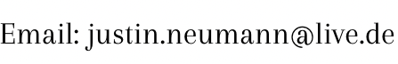

Justin is a Data Scientist with extensive experience in marketing analytics. He specializes in Machine Learning and Predictive Analytics and applies his knowledge to drive customer growth. Justin has worked as a consultant since 2013 and has been a Data Scientist since 2018. He has also completed a six-month internship in Singapore before starting his career as a consultant.
Justin’s expertise is in understanding what drives customer growth and building the technology to improve marketing and customer relationship management accordingly. He graduated with a Bachelor of Science in Business Information Systems from the University of Hamburg in 2011 and a Master of Science in Predictive Analytics from Northwestern University in Evanston, Illinois in 2018. Justin currently resides in Berlin, Germany.
For more information, see his LinkedIn profile by clicking the icon below.
Owner: Justin Neumann.

This is a private website and all content on this website is for informational purposes only. The owner of this website is not responsible for any errors or omissions, or for any actions taken based on the information provided on this website. The owner of this website does not endorse any products or services mentioned on this website. The owner of this website is not responsible for the content of any external websites that may be linked to on this website. This website may be updated or changed at any time without notice.